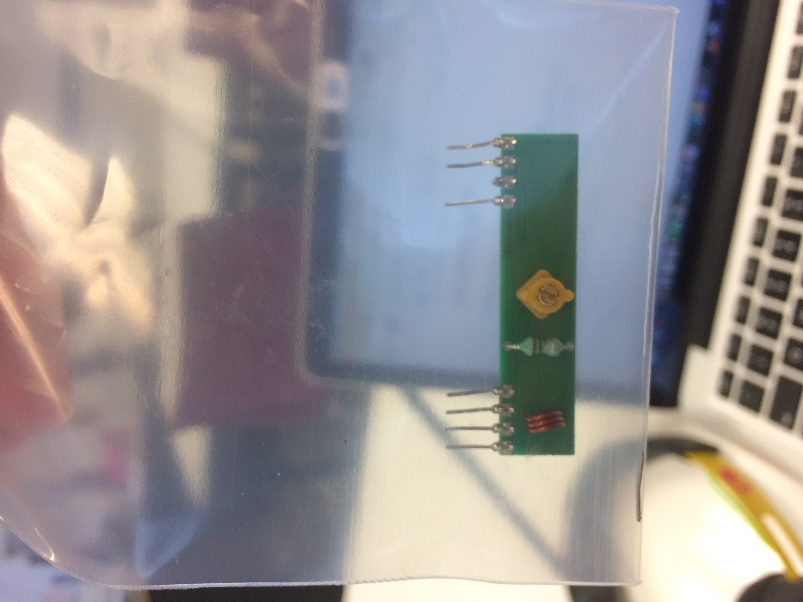
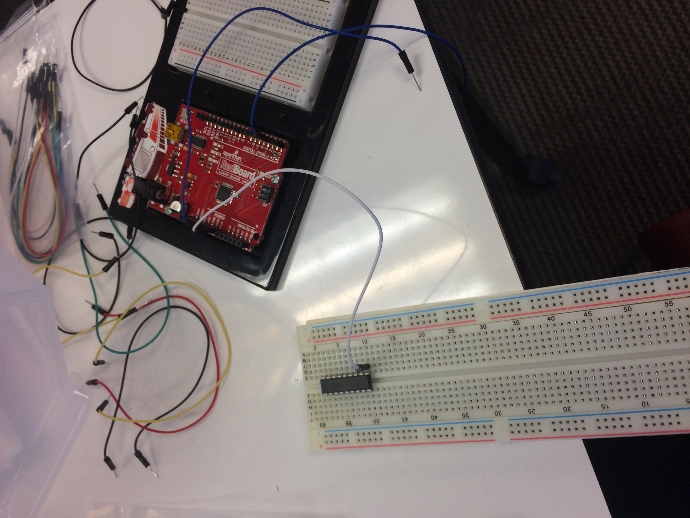
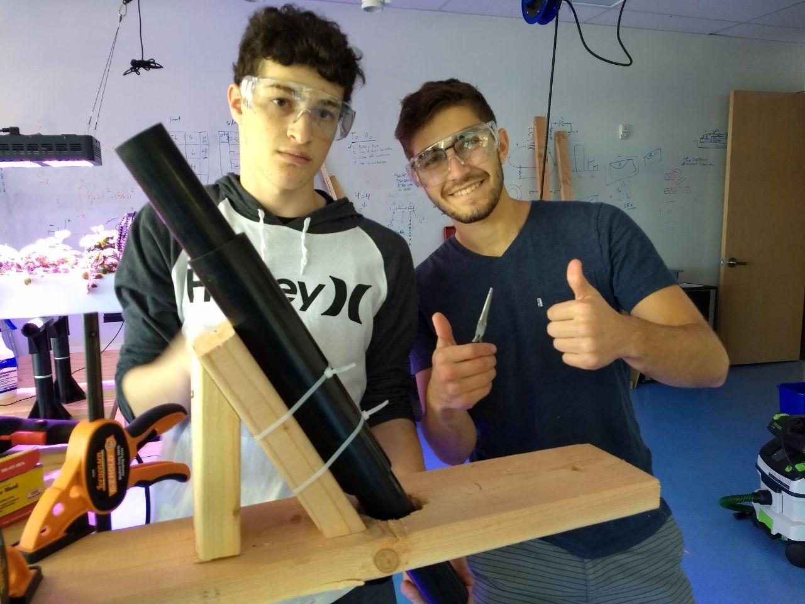
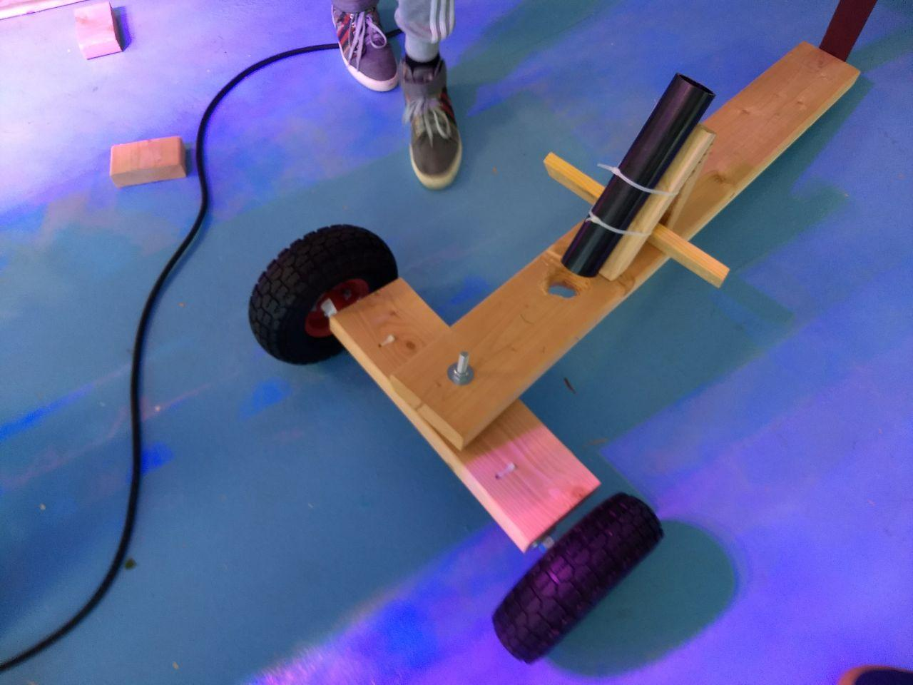

and material added to page.
Sanjay Raj
Milestone update:
I have the pan and tilt with the servo motors moving and rotating.Now I need to have it track the sun.
Here is the link to the video:Link to video
Concerns:
Earlier, I had the servo rotate 360 degrees at once using servo.write(), and that was too much, so I was worried that one of the motors were broken as a result. I will learn to not do more than 180 for next time.Nathan F
Nathan L
Milestone update:
Concerns:
Benny
Milestone update:
Milestone was to get all parts, almost have all parts, missing the reciever. Worked a bit on the board. Nothing should be different for end dates.
Concerns:
breaking a part
 Ariel
Milestone update:
Concerns:
Zack, Jake
Milestone update:
Completed construction of FM transmitter. We're having issues receiving the signal, and are attempting to debug.
Concerns:
We may have incorrectly assembled the radio, but it's very hard to tell what the problem is. It may take a long time to debug. We're considering starting over and using a breadboard, which will be easier to control.Ben Yeffet
Jeffrey Robinson-Wrobel
Jason Flaster
Jake Cimring
- Construct the Steering shaft 
- Attach a seat back to the chassis
- Ordered 10" Tire and Wheel with 5/8" Shaft Hole
- The wheels have arrived and the steering was attached 

- We have decided to order the parts as needed
- Everything we need is arriving and in good condition
- Serious concern over getting the controller to work
- We may have to first make the kart work without the controller